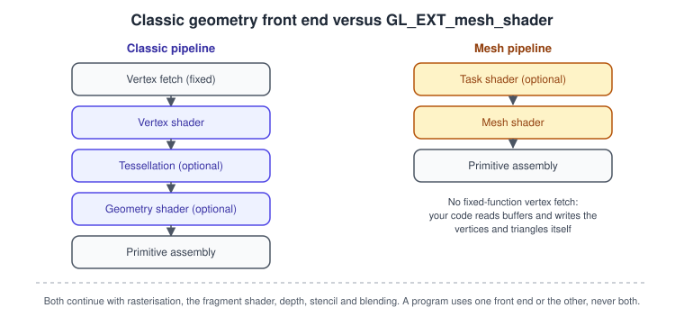
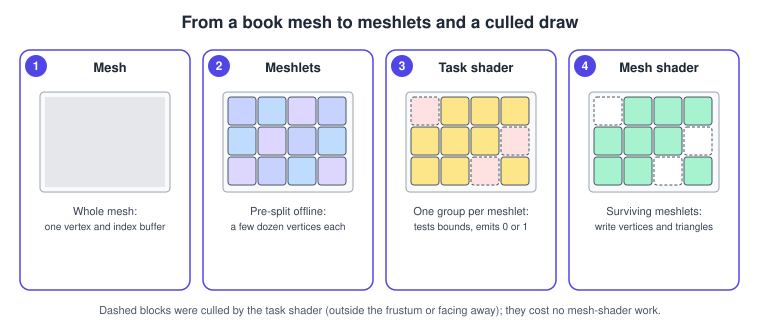
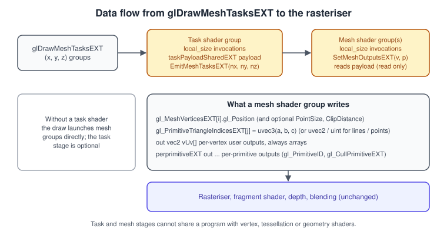

Mesh Shaders in OpenGL (GL_EXT_mesh_shader)
|
This content was generated with the assistance of AI and should be verified against the official documentation before being relied on in production. |
Mesh shaders replace the classic geometry front end of the pipeline (vertex fetch, vertex shader, tessellation and
geometry shader) with two compute-like stages: an optional task shader and a mesh shader. Instead of the GPU
fetching vertices one by one, a work group of invocations cooperates to produce a small batch of vertices and triangles
(a meshlet) and hands it directly to the rasteriser. OpenGL gained a vendor-neutral extension for this, GL_EXT_mesh_shader,
in 2025.
The facts on this page were checked in November 2026. The extension is registered in the Khronos OpenGL registry as
extension number 1024; its text carries revision 1 dated 1 July 2025, and the Khronos news item announcing it appeared on
28 October 2025. The specification is written against OpenGL 4.6 core and requires OpenGL 4.5 or OpenGL ES 3.1 as a
minimum. The GLSL side is the separate GLSL_EXT_mesh_shader extension, usable from #version 450 on. The rest of this
guide documents OpenGL 4.6 with GLSL 4.60 and ES 3.2 with GLSL ES 3.20; this page is the one place where an extension, not
the core specification, defines the feature. The classic stages are explained in
The OpenGL Rendering Pipeline and
Geometry and Tessellation Shaders; the general idea
across APIs is in Advanced Pipeline Stages.
Which drivers support it
Mesh shading hardware has existed since 2018, and GL_NV_mesh_shader was a vendor extension for NVIDIA GPUs from the start.
GL_EXT_mesh_shader is the shared version designed with the Vulkan extension VK_EXT_mesh_shader in mind. What is
confirmed today:
-
The Mesa feature list (https://docs.mesa3d.org/features.txt) marks
GL_EXT_mesh_shaderas done for the radeonsi driver on GFX10.3 and newer AMD GPUs, and for Zink, which translates OpenGL to Vulkan on top of a Vulkan driver that offers mesh shaders. -
The extension specification names AMD as its author, with contributors from the earlier NVIDIA extension and the Vulkan extension.
-
macOS is capped at OpenGL 4.1 and will not gain the extension; Apple’s equivalent is in Metal.
For every other driver and platform, treat support as something to detect at runtime rather than assume: check the extension string, as the code below does, and fall back to the classic pipeline when it is missing. Do not design a game that needs mesh shaders in OpenGL unless you control the target hardware; on a wider audience, use them as an optional fast path, and see the choice discussion in OpenGL in 2026.
How the pipeline changes

In the classic pipeline, fixed-function hardware reads an index buffer and vertex attributes, and your vertex shader runs once per vertex. That arrangement is rigid: the input layout is fixed, you cannot skip work for hidden pieces of a mesh before vertices are fetched, and amplifying geometry needs the slow geometry shader or the tessellator.
With mesh shaders:
-
There is no fixed-function vertex fetch. The shader reads whatever buffers it wants (usually SSBOs or uniform buffers) and decides what to emit.
-
A mesh shader work group declares how many vertices and primitives it will produce (
SetMeshOutputsEXT) and writes them into built-in output arrays. The invocations of the group share the work: for example, 32 invocations can transform 64 vertices by having each handle two. -
An optional task shader runs before the mesh stage. Each task group typically examines one meshlet or object, and decides how many mesh groups to launch by calling
EmitMeshTasksEXT. Zero means the object is culled and costs almost nothing. A small payload variable carries data from the task group to the mesh groups it launched. -
Mesh and task shaders cannot be linked in the same program with vertex, tessellation or geometry shaders. A mesh program consists of an optional task shader, a mesh shader and a fragment shader.
The model is the same as in Vulkan (VK_EXT_mesh_shader), Direct3D 12 and Metal, so techniques carry over; the
cross-API summary is in Advanced Pipeline Stages.
Meshlets
A mesh shader works well when the model has been cut into meshlets in advance: small clusters of vertices and triangles, typically a few dozen vertices and around a hundred triangles, with a precomputed bounding sphere and a normal cone for culling. The splitting is done at load time or in an asset tool; libraries such as meshoptimizer provide meshlet builders. Smaller meshlets cull more precisely, larger ones give better hardware occupancy; the right size depends on the GPU, so make it configurable and measure.

-
Start from the ordinary indexed mesh of the book or the shelf.
-
Build meshlets offline, together with a bounding sphere and a cone for each.
-
A task shader launches one group per batch of meshlets; each invocation tests one meshlet against the camera (frustum and back-facing cone) and counts the survivors.
-
The mesh groups run only for survivors and write their vertices and triangles.
The GLSL side
A mesh shader needs the extension enabled and a few declarations:
| Item | What it does |
|---|---|
|
Enables the extension in the shader; the extension macro |
|
Work group size of a task or mesh shader; unspecified dimensions default to 1. |
|
Mesh shader only: output primitive kind ( |
|
Mesh shader only: declares how many vertices and primitives this group actually produces. Call it once per group, in uniform control flow, before writing any output. |
|
Built-in per-vertex output (an interface block |
|
|
|
Per-vertex user outputs are declared as arrays, one element per output vertex. |
|
Per-primitive outputs, also arrays. The built-in per-primitive block |
|
A global variable shared between a task group and the mesh groups it launches. A task shader can read and write it; a mesh shader can only read it. |
|
Task shader only: the number of mesh groups to launch. Call it exactly once per group, in uniform control flow. It also acts as a barrier. |

The built-in work group variables are the same as in compute shaders (gl_WorkGroupID, gl_LocalInvocationID,
gl_LocalInvocationIndex, gl_NumWorkGroups); see
Compute Shaders. All writes to the output arrays are done by the work
group together, so the usual pattern is a loop that strides by the group size.
Launching a draw
The draw commands take work group counts, not vertex counts:
| Command | Meaning |
|---|---|
|
Launches |
|
Reads the three counts from the buffer bound to |
|
Several indirect launches in one call. |
|
Like the previous one, with the count read from a buffer; it needs |
The extension also defines the shader types GL_MESH_SHADER_EXT and GL_TASK_SHADER_EXT, the program-pipeline stage bits
GL_MESH_SHADER_BIT_EXT and GL_TASK_SHADER_BIT_EXT, and the usual limit queries. Query the limits before choosing your
local_size, max_vertices and max_primitives: the extension defines maxima for work group counts (for example
GL_MAX_MESH_WORK_GROUP_COUNT_EXT), work group sizes (for example GL_MAX_TASK_WORK_GROUP_SIZE_EXT), invocations,
shared memory, task payload size and output vertices, primitives and components, and a preference flag
GL_MESH_PREFERS_COMPACT_VERTEX_OUTPUT_EXT. The numbers are driver specific; read them rather than hard-coding.
A complete example: the book cover from a mesh shader
The program draws the book cover quad without any vertex buffer. The mesh shader produces the four corners and the two triangles from nothing but a matrix uniform. It needs a driver that exposes the extension (for example radeonsi on a GFX10.3 or newer AMD GPU, or Zink over a Vulkan driver with mesh shading). The functions and constants are loaded by hand so the example does not depend on whether your generated glad2 header includes the extension.
// mesh_quad.cpp - GLFW + glad2 (gl:core=4.6). Extension functions are loaded manually.
#include <glad/gl.h>
#include <GLFW/glfw3.h>
#include <cmath>
#include <cstdio>
#include <cstdlib>
#ifndef GL_MESH_SHADER_EXT
#define GL_MESH_SHADER_EXT 0x9559 // values from the EXT_mesh_shader registry text
#define GL_TASK_SHADER_EXT 0x955A
#endif
using DrawMeshTasksFn = void (*)(GLuint, GLuint, GLuint);
static const char* kMeshSrc = R"GLSL(
#version 460 core
#extension GL_EXT_mesh_shader : require
layout(local_size_x = 32) in;
layout(triangles, max_vertices = 4, max_primitives = 2) out;
layout(location = 0) out vec2 vUv[];
uniform mat4 uMvp;
void main() {
SetMeshOutputsEXT(4u, 2u); // this group emits 4 vertices and 2 triangles
uint i = gl_LocalInvocationIndex;
if (i < 4u) { // one invocation per corner, the others idle
vec2 corner = vec2(float(i & 1u), float(i >> 1u)); // (0,0) (1,0) (0,1) (1,1)
vec3 p = vec3((corner.x - 0.5) * 1.2, (corner.y - 0.5) * 1.8, 0.0); // a 1.2 x 1.8 book cover
gl_MeshVerticesEXT[i].gl_Position = uMvp * vec4(p, 1.0);
vUv[i] = corner;
}
if (i == 0u) {
gl_PrimitiveTriangleIndicesEXT[0] = uvec3(0u, 1u, 2u);
gl_PrimitiveTriangleIndicesEXT[1] = uvec3(2u, 1u, 3u);
}
}
)GLSL";
static const char* kFragSrc = R"GLSL(
#version 460 core
layout(location = 0) in vec2 vUv;
out vec4 fragColor;
void main() {
vec3 cover = mix(vec3(0.45, 0.10, 0.12), vec3(0.75, 0.25, 0.20), vUv.y); // plain red-brown cover
float spine = step(vUv.x, 0.06);
fragColor = vec4(mix(cover, vec3(0.9, 0.75, 0.3), spine), 1.0);
}
)GLSL";
static GLuint compile(GLenum type, const char* src) {
GLuint s = glCreateShader(type);
glShaderSource(s, 1, &src, nullptr);
glCompileShader(s);
GLint ok = 0;
glGetShaderiv(s, GL_COMPILE_STATUS, &ok);
if (!ok) { char log[2048]; glGetShaderInfoLog(s, sizeof log, nullptr, log); std::fprintf(stderr, "%s\n", log); std::exit(1); }
return s;
}
int main() {
if (!glfwInit()) return 1;
glfwWindowHint(GLFW_CONTEXT_VERSION_MAJOR, 4);
glfwWindowHint(GLFW_CONTEXT_VERSION_MINOR, 6);
glfwWindowHint(GLFW_OPENGL_PROFILE, GLFW_OPENGL_CORE_PROFILE);
GLFWwindow* window = glfwCreateWindow(800, 600, "Bookshelf GL - mesh shader", nullptr, nullptr);
if (!window) { glfwTerminate(); return 1; }
glfwMakeContextCurrent(window);
if (!gladLoadGL(glfwGetProcAddress)) return 1;
if (!glfwExtensionSupported("GL_EXT_mesh_shader")) {
std::fprintf(stderr, "GL_EXT_mesh_shader is not available: use the classic pipeline instead\n");
glfwTerminate();
return 2;
}
auto glDrawMeshTasksEXT = reinterpret_cast<DrawMeshTasksFn>(glfwGetProcAddress("glDrawMeshTasksEXT"));
if (!glDrawMeshTasksEXT) return 3;
GLuint program = glCreateProgram();
GLuint mesh = compile(GL_MESH_SHADER_EXT, kMeshSrc);
GLuint frag = compile(GL_FRAGMENT_SHADER, kFragSrc);
glAttachShader(program, mesh);
glAttachShader(program, frag);
glLinkProgram(program);
GLint ok = 0;
glGetProgramiv(program, GL_LINK_STATUS, &ok);
if (!ok) { char log[2048]; glGetProgramInfoLog(program, sizeof log, nullptr, log); std::fprintf(stderr, "%s\n", log); return 4; }
GLint mvpLocation = glGetUniformLocation(program, "uMvp");
while (!glfwWindowShouldClose(window)) {
int w, h;
glfwGetFramebufferSize(window, &w, &h);
glViewport(0, 0, w, h);
glClearColor(0.08f, 0.08f, 0.10f, 1.0f);
glClear(GL_COLOR_BUFFER_BIT);
float t = float(glfwGetTime());
float c = std::cos(t), s = std::sin(t), a = float(h) / float(w);
// rotation about Y (column-major) times a simple aspect-correcting scale, no perspective
const float mvp[16] = { c * a, 0, -s * 0.2f, 0,
0, 1, 0, 0,
s * a, 0, c * 0.2f, 0,
0, 0, 0, 1 };
glUseProgram(program);
glUniformMatrix4fv(mvpLocation, 1, GL_FALSE, mvp);
glDrawMeshTasksEXT(1, 1, 1); // one mesh group (no task shader in this program)
glfwSwapBuffers(window);
glfwPollEvents();
}
glfwTerminate();
return 0;
}Notes on the example:
-
The program links a mesh shader and a fragment shader only. The task stage is optional.
-
glDrawMeshTasksEXT(1, 1, 1)launches one work group of 32 invocations. Four of them write a vertex each; the first one writes both triangles. The fragment shader input must use the samelocationas the mesh shader output. -
A rotating quad does not need a mesh shader, of course; the point is the minimal set of declarations. The next section shows where the stage earns its keep.
Meshlet culling with a task shader
A realistic setup stores the meshlets in SSBOs and runs a task shader that culls them. This sketch shows the shader pair; the buffer setup is the same as for any SSBO (see Uniforms, UBOs and SSBOs).
// task shader: one invocation per meshlet, 32 meshlets per group
#version 460 core
#extension GL_EXT_mesh_shader : require
layout(local_size_x = 32) in;
struct Meshlet { vec4 sphere; uint vertexOffset; uint vertexCount; uint triangleOffset; uint triangleCount; };
layout(std430, binding = 0) readonly buffer Meshlets { Meshlet meshlets[]; };
uniform vec4 uFrustumPlanes[6];
uniform uint uMeshletCount;
struct Payload { uint meshletIndex[32]; };
taskPayloadSharedEXT Payload payload;
shared uint sSurvivors;
bool visible(vec4 sphere) {
for (int i = 0; i < 6; ++i)
if (dot(uFrustumPlanes[i].xyz, sphere.xyz) + uFrustumPlanes[i].w < -sphere.w) return false;
return true;
}
void main() {
if (gl_LocalInvocationIndex == 0u) sSurvivors = 0u;
barrier();
uint id = gl_WorkGroupID.x * 32u + gl_LocalInvocationIndex;
if (id < uMeshletCount && visible(meshlets[id].sphere)) {
uint slot = atomicAdd(sSurvivors, 1u);
payload.meshletIndex[slot] = id;
}
barrier();
EmitMeshTasksEXT(sSurvivors, 1u, 1u); // zero survivors launches no mesh work
}The mesh shader then uses gl_WorkGroupID.x as the index into payload.meshletIndex, loads that meshlet’s vertices and
triangle indices, and writes them to the output arrays as in the previous example. Because EmitMeshTasksEXT must be
called once per group in uniform control flow, it sits at the end, outside any branch.
Common mistakes and performance notes
-
Exceeding the declared maxima. Writing outputs beyond
max_verticesormax_primitives, or index values at or above the count given toSetMeshOutputsEXT, is undefined. -
Calling
SetMeshOutputsEXTorEmitMeshTasksEXTin divergent control flow or more than once per group. -
Forgetting the output arrays are per vertex. User outputs such as
vUvmust be arrays; per-primitive outputs needperprimitiveEXT. -
Mixing stages. Attaching a vertex shader to a mesh program fails at link time.
-
Assuming the draw takes vertices. Counts are work groups; the work done per group is your shader’s decision.
-
Tiny meshes. For a handful of triangles the classic pipeline has less overhead. Mesh shaders pay off for dense, culled or procedural geometry (terrain, foliage, meshlet-based scenes).
-
Output size. Large outputs reduce how many groups fit on a GPU at once; keep
max_verticesandmax_primitivesnear what you need, and consult the compact-output preference query.
What changed recently
-
NVIDIA introduced mesh shading in OpenGL as
GL_NV_mesh_shaderfor its Turing GPUs; Vulkan followed withVK_NV_mesh_shaderand then the cross-vendorVK_EXT_mesh_shader. -
GL_EXT_mesh_shaderentered the Khronos registry in 2025 (extension text revision 1, 1 July 2025; announced in the Khronos news of 28 October 2025). The core specification itself is still 4.6 (2017, revision 2022). -
There is no OpenGL 4.7 or 5.0: mesh shaders arrive as an extension to 4.6, not a new core version. The books in this section (published 2007 to 2014) predate the feature entirely and describe only the classic front end.